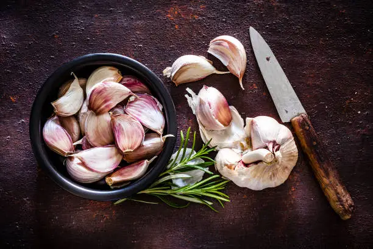
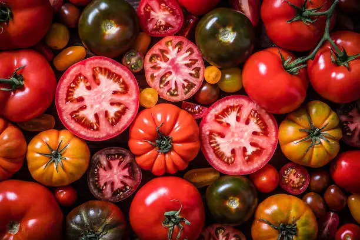

RECIPE INFORMATION
Preparation time: 1 hour 30 minutes
Cooking time: 2 hour 30 minutes
Number of servings: 4-6 people
Difficulty Level: Intermediate
INGREDIENTS
- Long grain rice: 2.5 Cups
- Tomato Puree (or fresh tomatoes): 4 fresh tomatoes blended
- Onions: 1.5 medium size, chopped
- Peppers (e.g, scotch bonnet or bell peppers): 1.5 scotch or bell peppers chopped
- Garlic: 3 cloves, minced
- Ginger: 1.5 inches, grated
- Vegetable Oil: 1/4 Cups
- Spices ( curry powder, thyme, bay leaves): 1.5 tea spoons
- Salt: to your taste
- Beef or chiken stock: 3 Cups
INSTRUCTIONS
- Prepare the Ingredients:
Rinse and chop the onions, peppers, and tomatoes. Grate the ginger and garlic. Measure out the rice, tomato puree, spices, and stock. - Heat Oil in a Pot:
Heat about 2-3 tablespoons of vegetable oil in a large pot over medium heat. - Sauté Onions and Ginger:
Add the chopped onions and grated ginger to the pot. Sauté until the onions are translucent and fragrant. - Add Garlic and Peppers:
Add the minced garlic and chopped peppers to the pot. Sauté for another minute, until the peppers start to soften. - Add Tomato Puree:
Add the tomato puree to the pot and stir well. Cook for about 5-7 minutes, stirring occasionally, until the puree thickens and darkens. - Add Spices and Seasoning:
Add the curry powder, thyme, bay leaves, salt, and any other desired spices to the pot. Stir well to combine. - Add Rice:
Add the rinsed long-grain rice to the pot and stir well to coat the rice with the tomato mixture. - Add Stock and Water:
Add the beef or chicken stock and water to the pot, making sure the rice is covered. Bring the mixture to a boil. - Simmer and Cook:
Reduce the heat to low, cover the pot, and simmer for about 20-25 minutes, or until the rice is cooked and the liquid has been absorbed. - Fluff and Serve:
Once the rice is cooked, fluff it gently with a fork to separate the grains. Serve hot, garnished with chopped fresh herbs or onions, if desired.
Some Cooking Tip
When cooking,taste your food as you go and adjust the seasoning accordingly. This will help you achieve a balanced flavor and ensure that your dish turns out delicious. Don't be afraid to experiment and try new things. it's all part of the cooking process! Also, keep in mind that practice makes perfect, so don't get discouraged if your first attempts don't turn out exactly as you hoped. With time and experience, you'll develop your own cooking style and techniques.
NIGERIAN JOLLOF FINISHED DISH


NIGERIAN JOLLOF RICE INGREDIENTS
 NIGERIAN JOLLOF RICE COOIKNG PROCESS